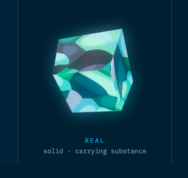

MCP configs
Temp-path launches, fetch-to-shell, encoded exec, remote package tags, token variables on a URL.
Light Architects · detection pack
Detection content for AI-agent tooling on a developer workstation. YARA for the files an agent trusts. Sigma for the macOS events those files become.

Coverage
Temp-path launches, fetch-to-shell, encoded exec, remote package tags, token variables on a URL.
Unicode tags, bidi overrides, confirmation bypass, and credential paths next to a network sink.
RunAtLoad plus KeepAlive, a shell, and a user-writable path. Reverse SSH with host-key checking off.
A shebang plus a decode-to-shell, a fetch-to-shell, or a network call carrying a credential path.
Agent hosts writing SSH trust or shell rc files, dropping plists, or spawning a piped shell.
17 rules. Each one has a true-positive fixture, a known-good fixture, a false-positive note, and a write-up. Status is experimental: the tests prove the fixtures.
| Rule | Engine | Severity | What it watches |
|---|---|---|---|
| SERAPH_MCP_Launch_From_Temp | yara | high | MCP config launches a server from a temp or cache path |
| SERAPH_MCP_Curl_Pipe_Shell | yara | critical | MCP config pipes a remote fetch into a shell |
| SERAPH_MCP_Encoded_Exec | yara | high | MCP config decodes a payload into a shell or eval |
| SERAPH_MCP_Remote_Npx | yara | high | MCP config runs npx or uvx from a remote or floating tag |
| SERAPH_MCP_Secret_Exfil | yara | critical | MCP config places a secret environment variable on a network sink |
| SERAPH_Instruction_Hidden_Unicode | yara | high | Instruction file contains Unicode tags or bidi overrides |
| SERAPH_Instruction_Unsafe_Directive | yara | high | Agent instructions request secret theft or skipped confirmation |
| SERAPH_LaunchPlist_Writable_Interpreter | yara | high | LaunchAgent plist runs a shell from a user-writable path |
| SERAPH_LaunchPlist_SSH_Reverse_Tunnel | yara | critical | LaunchAgent plist opens an SSH reverse tunnel with host-key checking off |
| SERAPH_Git_Hook_Suspicious_Exec | yara | high | Git hook decodes a payload, pipes a fetch into a shell, or posts a credential path |
| SERAPH_MCP_Unpinned_Package | yara | medium | MCP config runs an unpinned npx or uvx package |
| SERAPH_MacOS_Agent_Writes_Authorized_Keys | sigma | high | macOS agent process wrote SSH authorized_keys |
| SERAPH_MacOS_Agent_Modifies_Shell_RC | sigma | medium | macOS agent process modified a user shell rc file |
| SERAPH_MacOS_Interpreter_Drops_Launch_Plist | sigma | medium | macOS interpreter wrote a LaunchAgent or LaunchDaemon plist |
| SERAPH_MacOS_SSH_Reverse_Lax_HostKey | sigma | high | macOS SSH process opened a reverse tunnel with host-key checking disabled |
| SERAPH_MacOS_Agent_Piped_Shell | sigma | high | macOS agent parent started a shell that pipes a fetch or a decode |
| SERAPH_MacOS_Node_Starts_AI_CLI_Skip_Permissions | sigma | high | macOS node or npm started an AI CLI with a skip-permission flag |
Run
pip install -e ".[test]"
pytestScan
larc-seraph path/to/mcp.json
larc-seraph --sigma event.jsonLicense
Rules: Detection Rule License 1.1. Code, harness, and this site: Apache-2.0. CC-BY-4.0 was the other serious option for the rules. DRL keeps the author attached when a detection product uses the rule.